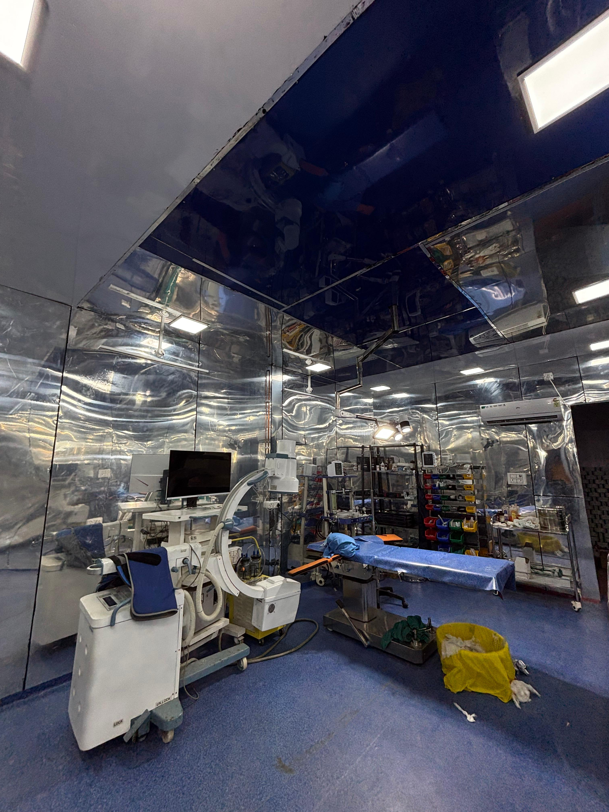
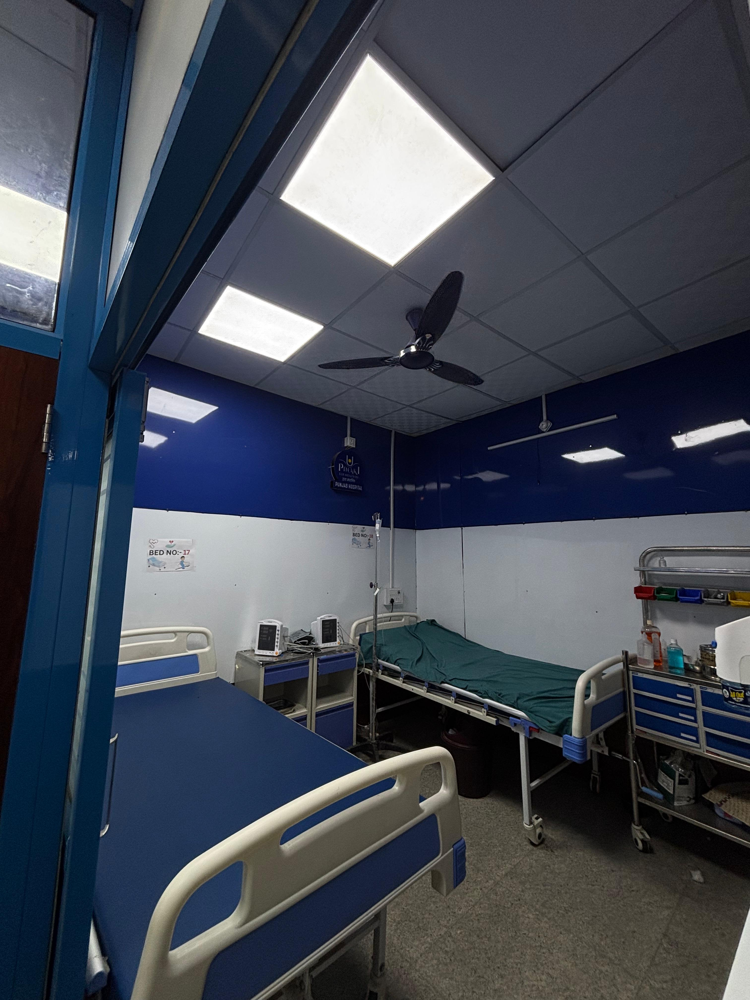
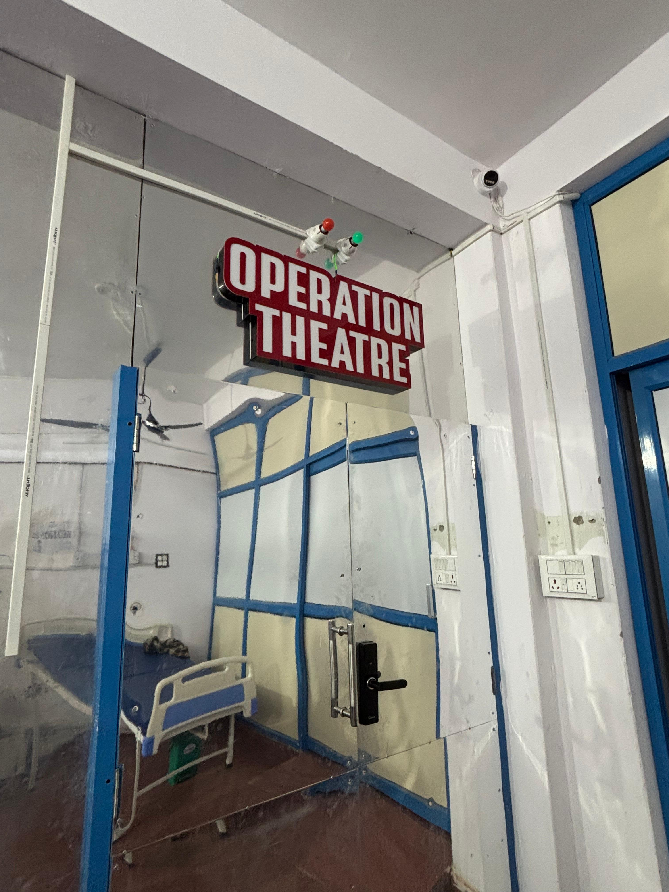
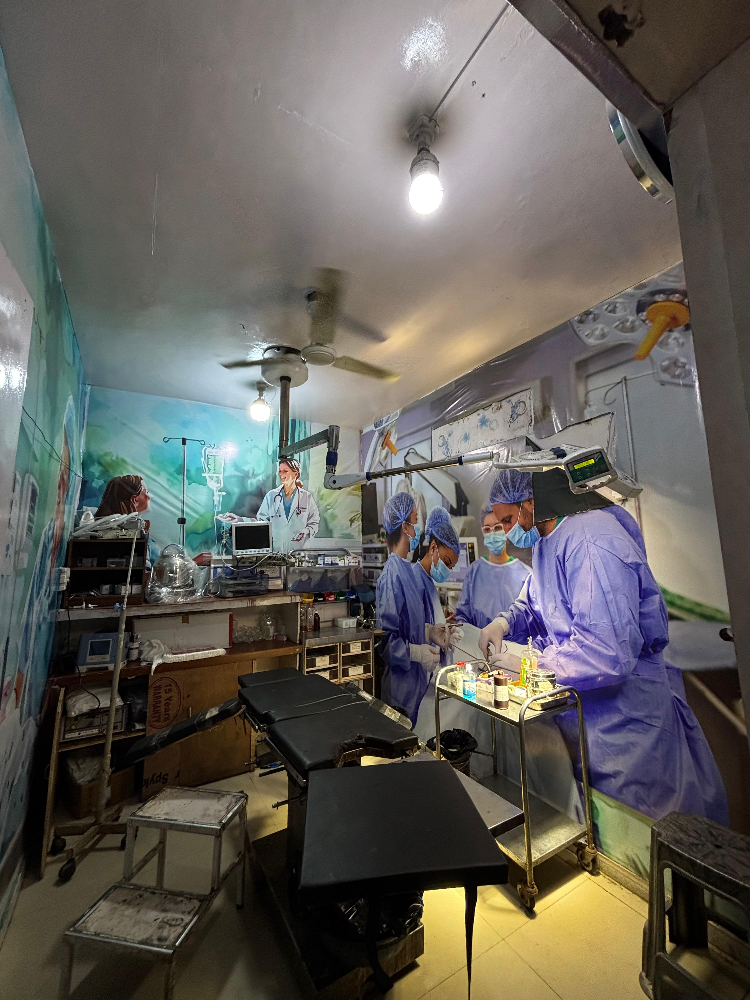

Advanced Surgical Excellence at Punjab Hospital
Punjab Hospital offers a state-of-the-art Modular Operation Theatre (MOT) designed to meet international standards of sterility, hygiene, and safety. Our MOT is built using advanced modular technology to ensure infection control, seamless maintenance, and top-class functionality for a wide range of surgeries.

The design and layout of our Modular OT not only help maintain a sterile environment but also reduce the turnaround time between surgeries, thereby enhancing operational efficiency. It ensures patient safety, improves surgical outcomes, and supports a wide range of disciplines including general surgery, orthopaedics, urology, neurosurgery, and more.



At Punjab Hospital, our Modular Operation Theatre represents a leap toward patient-centric surgical care. We ensure that the infrastructure not only meets but exceeds the NABH and WHO standards. With a team of experienced surgeons, nursing staff, and the latest medical technology, we ensure every surgical procedure is safe, efficient, and precise.